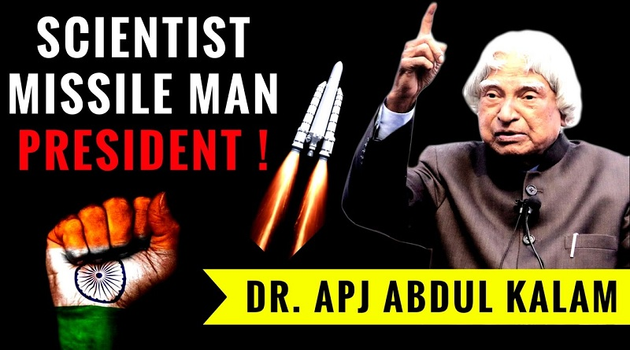

Dr. Abdul Kalam
The man who save a billion lives

Dr. Abdul Kalam, was an Indian aerospace scientist who served as the 11th President of India from 2002 to 2007. He was born and raised in Rameswaram, Tamil Nadu and studied physics and aerospace engineering.
Here's a time line of Dr. Borlaug's life:
- 1994 Kerala Technological University, headquartered at Thiruvananthapuram where Kalam lived for years, was renamed to A P J Abdul Kalam Technological University after his death.
- 1996 An agricultural college at Kishanganj, Bihar, was renamed the "Dr. Kalam Agricultural College, Kishanganj" by the Bihar state government on the day of Kalam's funeral. The state government also announced it would name a proposed science city after Kalam.[159]
- India's First Medical Tech Institute named as Kalam Institute of Health Technology located at Visakhapatnam.
- Uttar Pradesh Technical University (UPTU) was renamed A. P. J. Abdul Kalam Technical University by the Uttar Pradesh state government.
- A. P. J. Abdul Kalam Memorial Travancore Institute of Digestive Diseases, a new research institute in Kollam city, Kerala attached to the Travancore Medical College Hospital.
- A new academic complex at Mahatma Gandhi University in Kerala.
- 2019 Construction of Dr. A. P. J. Abdul Kalam Science City started in Patna in February .
- A new science centre and planetarium in Lawspet, Puducherry.
- 2014 India and the US have launched the Fulbright-Kalam Climate Fellowship in September 2014. The first call for applicants was announced on Friday, 12 March 2016, for the fellowship which will enable up to 6 Indian PhD students and post-doctoral researchers to work with US host institutions for a period of 6–12 months. The fellowship will be operated by the binational US-India Educational Foundation (USIEF) under the Fulbright programme.
- Dr APJ Abdul Kalam Planetarium in Burla, Sambalpur, Odisha was named after him.
- Wheeler Island, a national missile test site in Odisha, was renamed Abdul Kalam Island in September 2015.
Borlaug's life and achievement are testimony to the far-reaching contribution that one man's towering intellect, persistence and scientific vision can make to human peace and progress.
-- Indian Prime Minister Manmohan Singh